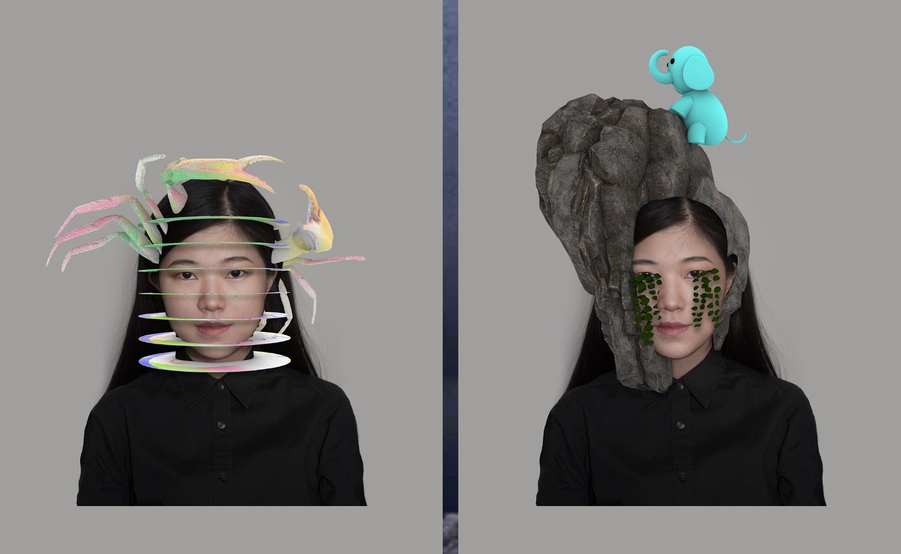

It took me a few tries to grasp what the art piece was all about, but I had a lot of fun playing around with the webpage because the results of each filter were different in each submission depending on how I answered the three questions. I thought Li Weiyi's use of filters as the main concept of this artwork was a really clever decision as filters are such popular digital tools that have been dominating social media applications over the past few years.


Along with text, emojis, and memes, filter users post their filtered-experiences as status, mood, comments or even micro-creations on social media platforms. Therefore, with its often funny and ephemeral contents, filters bring about strong visual impact, becoming an essential and widely spread social networking tool.